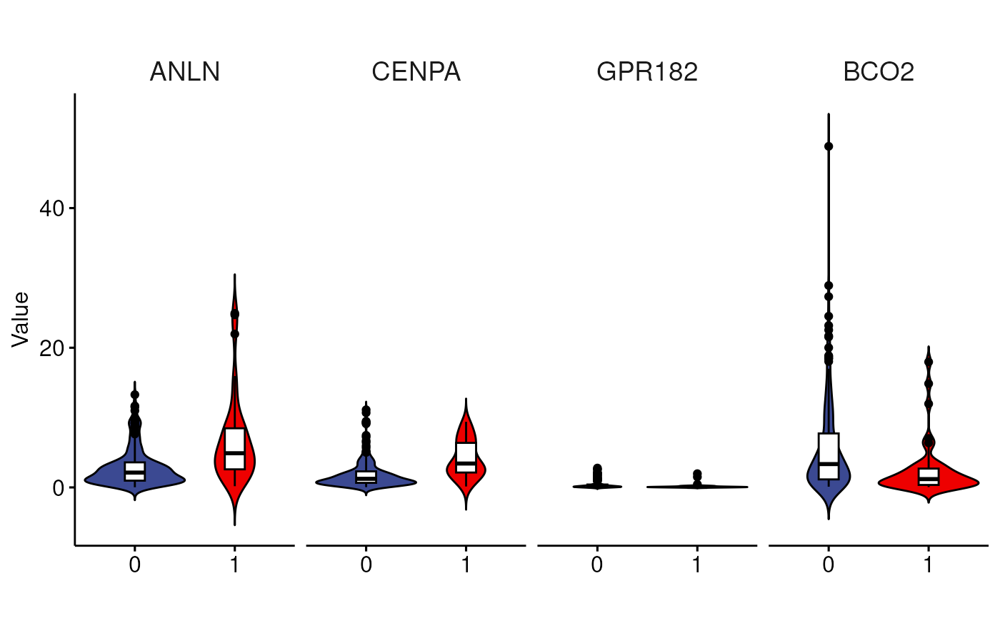

R/Common.R
plotJitterBoxplot.RdBoxplot with jitter, barplot with mean_se, violin plot with box
plotJitterBoxplot(
xvalues,
yvalues,
group,
title = "",
xlab = "",
ylab = "Value",
group.name = "Group",
color = "aaas",
color.by.x = FALSE,
comparisons = NULL,
method = "wilcox.test",
label.y = NULL,
add = NULL,
alternative = "two.sided",
rotate.x = 0,
outlier.shape = 19,
ylim = NULL,
stat = FALSE,
barplot = FALSE,
violin = FALSE,
facet = FALSE,
dotplot = FALSE,
shape.color.by = "black",
fill.color.by = NULL,
legend.pos = "",
group.position = ggplot2::position_dodge(0.9),
remove.element = NULL,
element_text_size = 14,
facet.n.row = 1
)vector
Default "Group"
Group by x lab. In this way we can perform stats
list( c("N", "T") )
wilcox.test or t.test
Default jitter for boxplot, mean_se for barplot, boxplot for violin and dot plot. character vector for adding another plot element (e.g.: dot plot or error bars). Allowed values are one or the combination of: "none", "dotplot", "jitter", "boxplot", "point", "mean", "mean_se", "mean_sd", "mean_ci", "mean_range", "median", "median_iqr", "median_hilow", "median_q1q3", "median_mad", "median_range"; see ?desc_statby for more details.
should be one of “two.sided”, “less”, “greater”
Default 0. numeric value specifying the rotation angle. 90 for vertical x-axis text.
point shape of outlier. Default is 19. To hide outlier, specify outlier.shape = NA. When jitter is added, then outliers will be automatically hidden.
Default FALSE
stat can work only after setting facet=TRUE
Default "black". If you want set the color by group, please set the group name (Default "Group"). Shape color by group
Default by "Group". If you want set the color by group, please set the group name (Default "Group"). Shape color by group
one of c("", "top", "bottom", "left", "right", "none")
Allowed values include "identity", "stack", "dodge", "position_dodge(0.9)", position_stack(). Position adjustment, either as a string, or the result of a call to a position adjustment function
Please refer https://rpkgs.datanovia.com/ggpubr/reference/rremove.html
Facet title text size
data("LIRI")
d.frame = LIRI[,3:6]
group = LIRI$status
liri.melt <- loonR::meltDataFrameByGroup(d.frame, group)
xvalues=liri.melt$Gene
yvalues=liri.melt$value
group=liri.melt$Group
loonR::plotJitterBoxplot(xvalues, yvalues, group, violin = T, facet = T)
